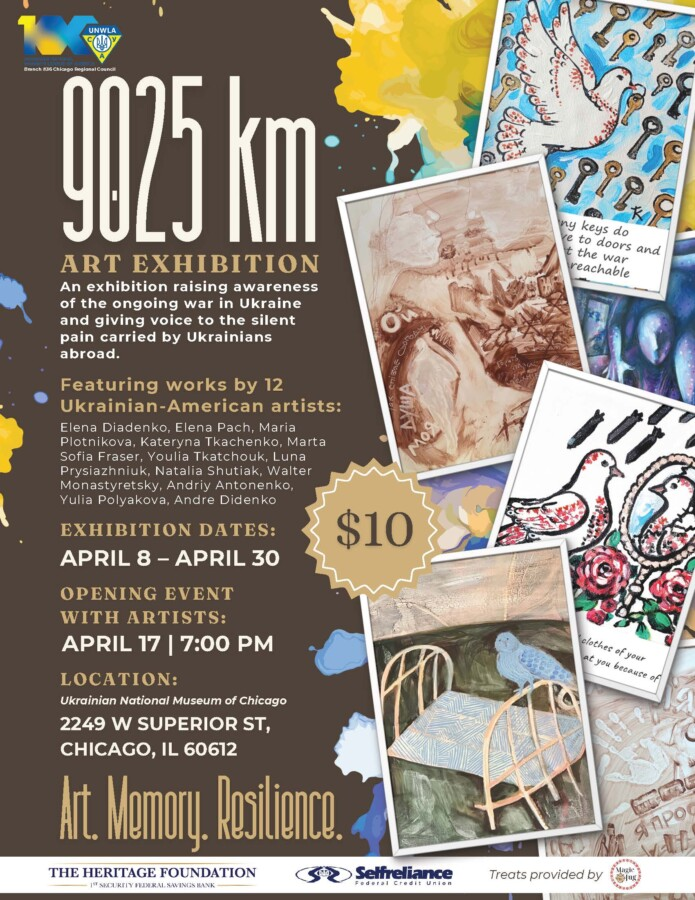

9025 km
This exhibition will feature 12 Ukrainian-American artists from Chicago: Elena Diadenko, Elena Pach, Maria Plotnikova, Kateryna Tkachenko, Marta Sofia Fraser, Youlia Tkatchouk, Luna Prysiazhniuk, Natalia Shutiak, Walter Monastyretsky, Andriy Antonenko, Yulia Polyakova and Andre Didenko.
Each artist will present three art works, representing the emotional and cultural distance between Chicago and Kyiv, two sister cities separated by 9,025 kilometers, yet united by shared spirit and resilience.
“9025 km” seeks to raise awareness of the ongoing war in Ukraine and give voice to the silent pain that Ukrainians abroad carry daily—the ache behind simple questions like “How is your family in Ukraine?” and the quiet strength behind the words “Thank you.”
Through art, we hope to create a space for empathy, mutual support, and the collection of humanitarian relief efforts.